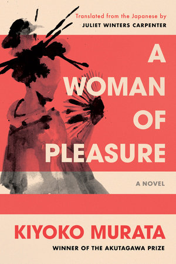
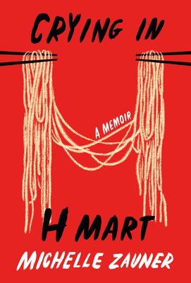

Songs 🎵
The songs I'll be playing this fall. Mostly a combination of indie and soft rock.
- we fell in love in october, by girl in red
- Apocalypse, by Cigarettes After Sex
- About You, by The 1975
- i saw you in a dream, by The Japanese House
- Cariño, by The Marías
- Skinny Love, by Bon Iver
- Fast Car, by Tracy Chapman
- Vienna, by Billy Joel
- Purple Rain, by Prince
Books 📖
What I've read since the start of the year and books I plan to read before the year ends.
- The Seven Husbands of Evelyn Hugo. Written by Taylor Jenkins Reid, this is probably my overall pick for 2024 and one of my favorite books of all time. From the moment I picked it up to when I flipped past the last page, there was never a dull moment! This book probably had the best pacing of any book I've read. It switches between two POVs: Evelyn Hugo's, former Hollywood bombshell, and Monique Grant's, a struggling journalist who has seemingly been chosen by Evelyn at random to do her first and final interview.
- A Woman of Pleasure. Highly highly recommend this book as well. I don't know why but I find myself reading a lot of Japanese literature. I love the way that Japanese books translate to English; it must be something about the language.... Anyway, I devoured this book as well. It follows the life of a young girl who is sold into the business of pleasure at a young age. Besides for how fascinating it is to get a look into the behind the scenes of prostitution in early 20th century Japan, the author does such an amazing job at writing from the young girl's perspective. She captures Ichi's innocence so well in a way that really highlights the contrast between her youthfulness and her circumstances.
- Crying in H Mart. I'm currently reading this and although I'm not too far in, I definitely relate to it a lot. It's written by the singer of a band I like to listen to (Japanese Breakfast), which I had no idea about until I read the back cover! Like me, Michelle Zauner has both Caucasian and Asian blood. We both have Chinese mothers and white fathers, so I can really understand and empathize with her when she is writing about her experience growing up. Now that I'm reading this book, I feel motivated to go back to her songs and relisten to them, hopefully with a new perspective.



Vibes 👽
My go-to spots in the city!
- Pier 26 (though Pier 25 is a close second). I love taking a long walk along the Hudson River, especially when there's something on my mind. Go sit on the swinging benches-- but not for too long or you might get dizzy! The sunset is especially beautiful here.
- Madison Square Park. Bonus points if you go watch the dogs at the Dog Run! This park is great because there typically aren't as many people, there are less ~weird~ activities going on than Washington Square Park, and the vibes are overall more wholesome and typical of your local neighborhood park.
- Koreatown. Idk, there's just something about heading to Ktown with your friends and grabbing a boba or an impromptu dinner (BBQ chicken, I'm looking at you...). This is the go-to spot when my friends and I don't know what to do. All we know is we want to hang out, and we make it happen!